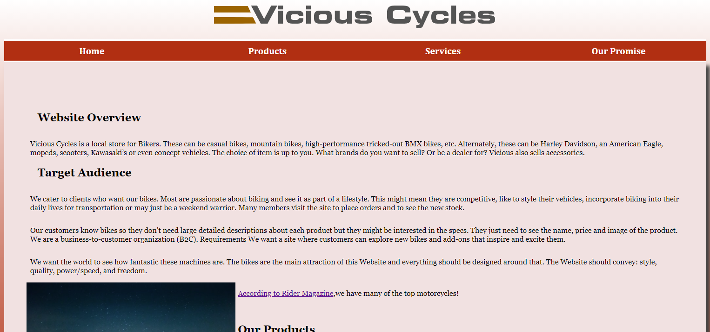
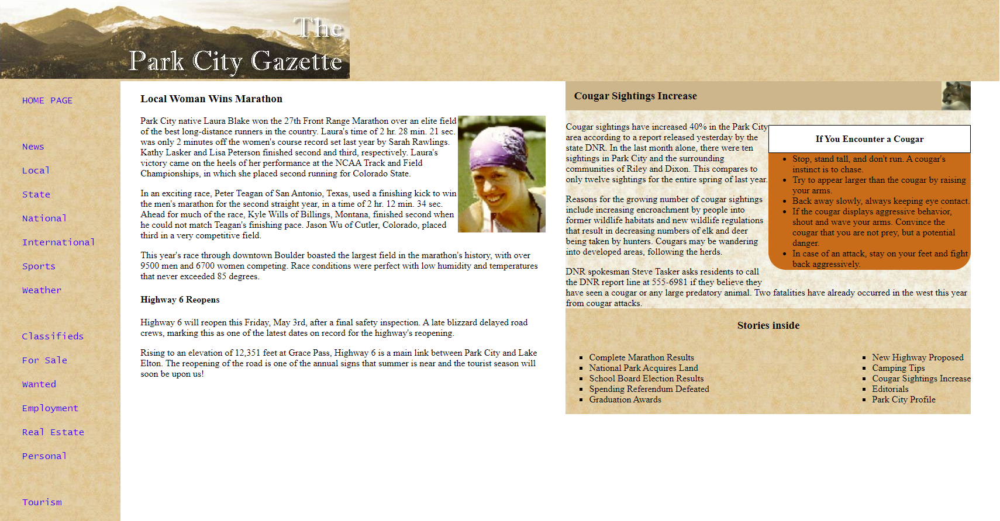

Sam Gaskill's profile
New Web Programmer
Hi everyone, welcome to my first edition of my resume page! This is a constant work in progress until the "v1.0" release, so any feedback is required! I was born on July the 9th 1992. I've always had an interest in computers, so web design is something that I wanted to get into.
Featured Projects
Here are some of the projects I have worked on in the past. More information can be found at my wordpress.
Vicious Cycles
This was the final big project in my web 140 class during the Summer semester of Wake Tech. In it, I had to design a website for a local motorycle spot called "Vicious Cycles".
Vicious Cycles LinkPark City Gazette
The big final in my Web 110 class, designing a home page for a fictional newspaper.
Park City Gazette LinkWork Experience
Front End Supervisor
Lowe's Home Improvement
2-16-18 to present
As a front end supervisor I am responsible for the front end performance. Making sure the schedule for cashiers runs smoothly, helping out at the customer service desk, and helping out with internet orders. COVID-19 put more emphasis on ordering online, and curbside pickup.
Education
Wake Tech Community College - Raleigh, NC
Web Programming - Certificate
This is what I am currently working on now! I hope to finish up within the next year or so. Right now, I am learning HTML, CSS, PHP, Javascript etc.